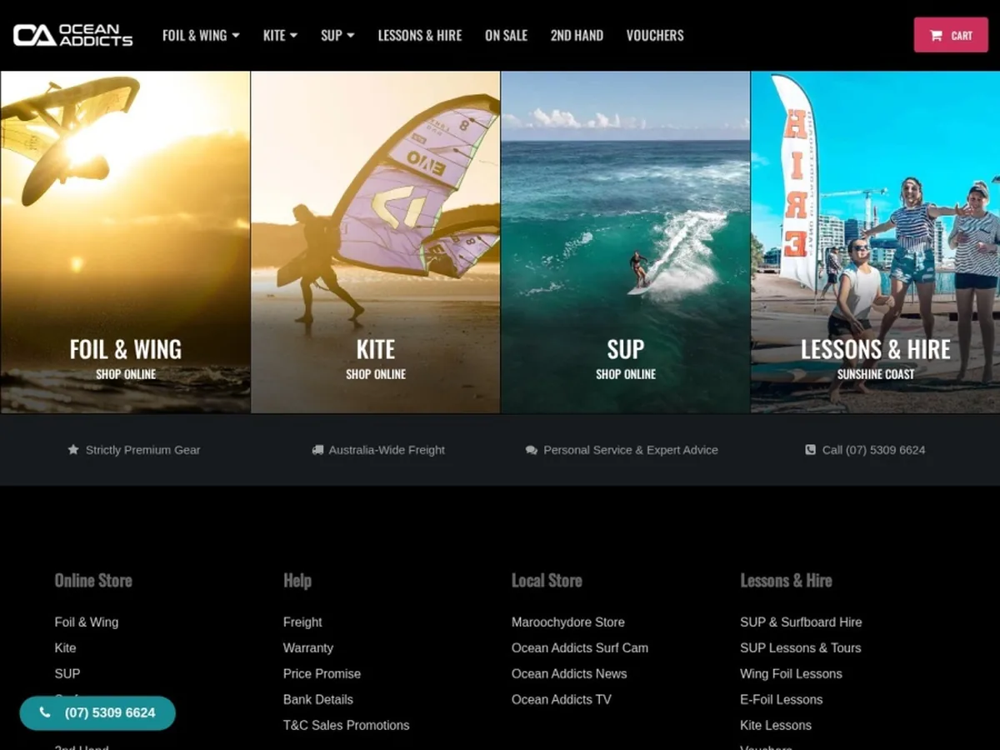
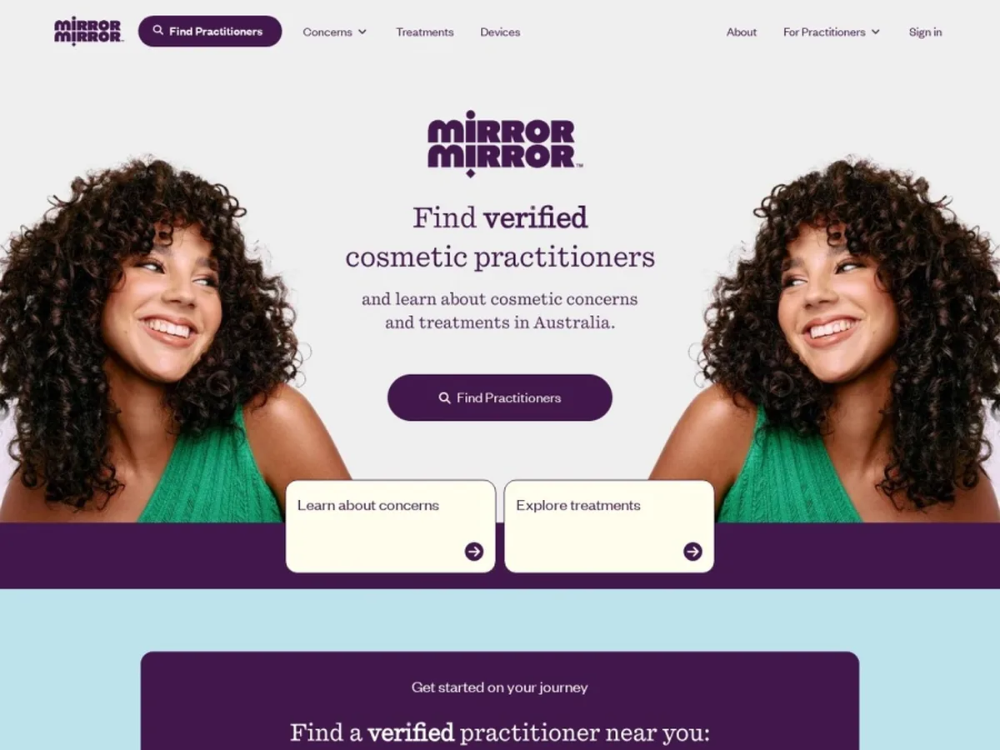
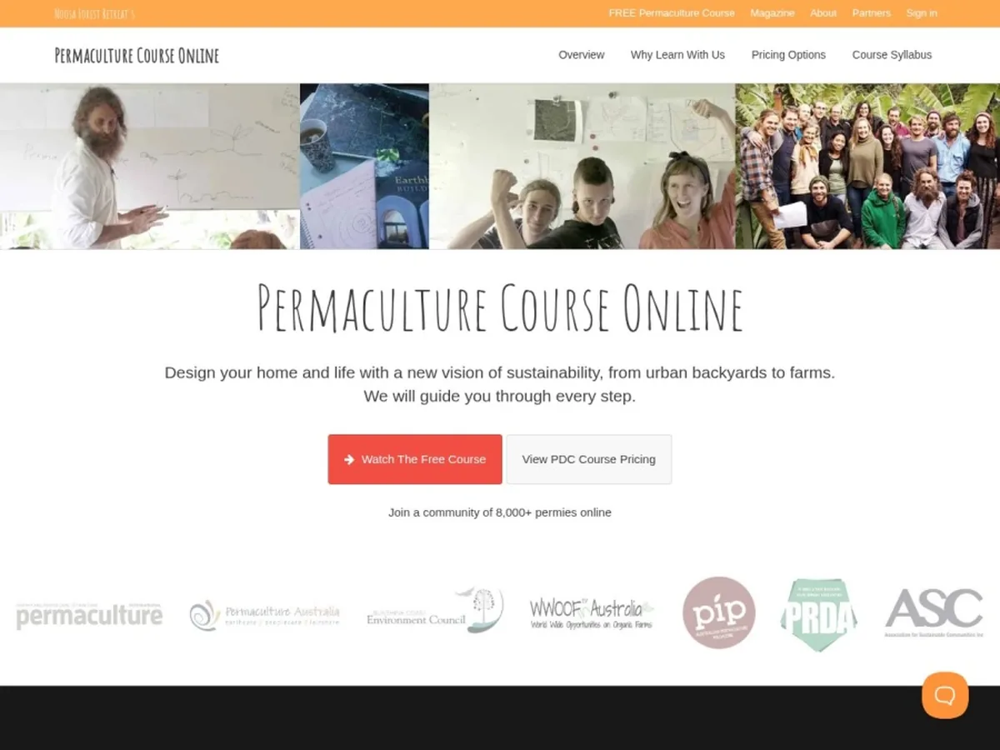
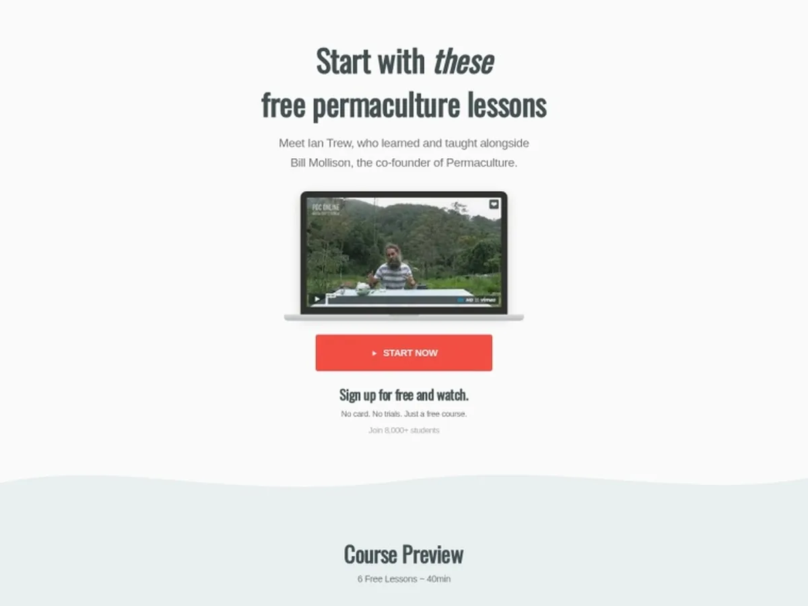
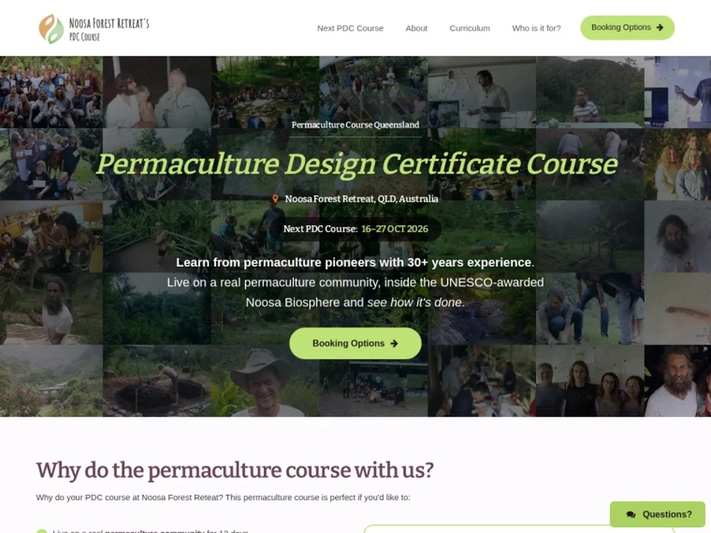
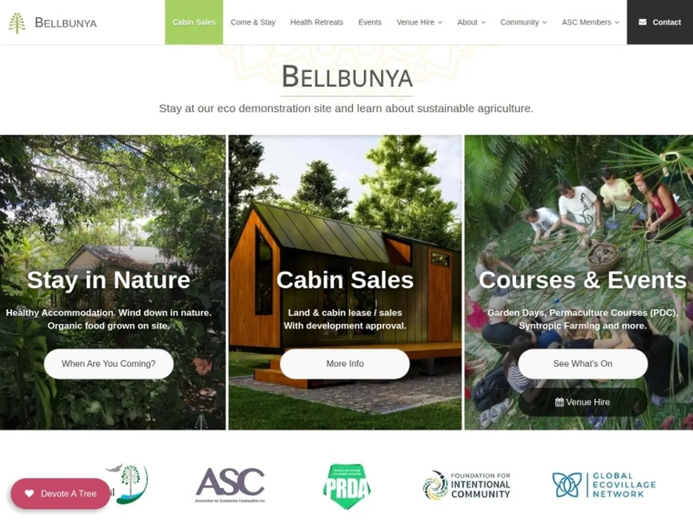
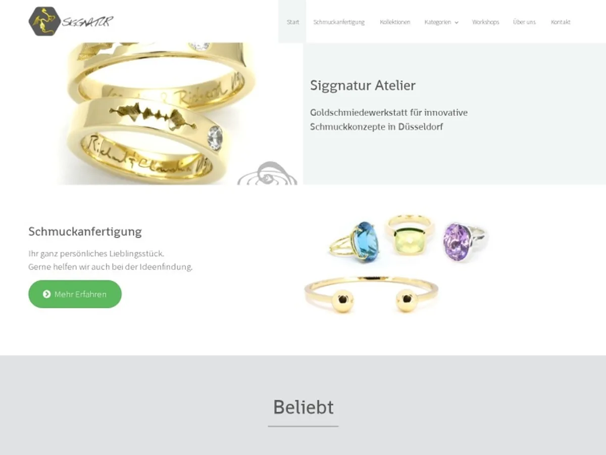
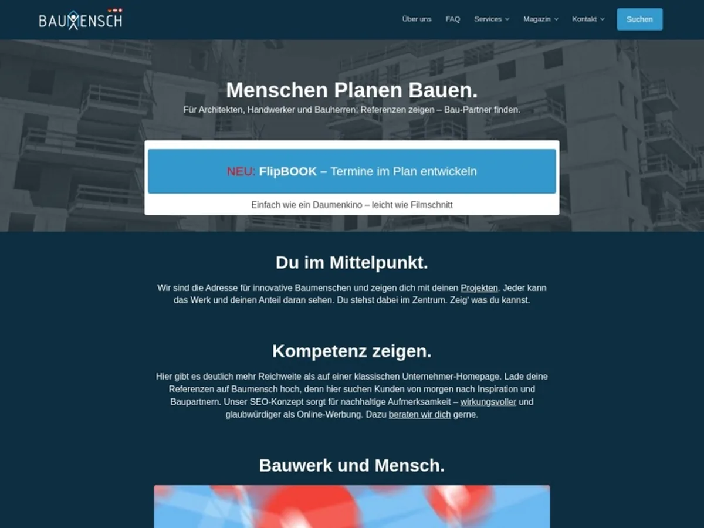

Custom Community Theme
Designed and co-developed this free WordPress theme that reached #1 on WordPress.org's weekly download charts. Free and premium version. Acquired by Macho Themes in 2016.
And I love to argue about the wording.
It started with a free theme that took off — and a lot of support questions on the WordPress.org forums.
Two new free tools:
A WordPress plugin. Your client edits the text, your layout stays exactly as built. Paste the HTML, click once, done — no React, no build step.
Know what an AI feature costs per month before you build it. 12 models compared, the abuse case included, and what to do about it. No signup, nothing stored.
Designed and co-developed this free WordPress theme that reached #1 on WordPress.org's weekly download charts. Free and premium version. Acquired by Macho Themes in 2016.
Built for developers. Open-source WordPress starter theme based on _s by Automattic and Bootstrap. 400+ GitHub stars and 150 forks, and featured in WordPress publications.
Contributed to BuddyForms, a WordPress form builder — core plugin and add-ons — plus a couple of smaller tools like TK Google Fonts.
Themes & plugins for WordPress & BuddyPress. I left in 2014 to move to Australia. The company was sold in 2024.
Sustainability design online course from Australia.
Open source & speakingin Germany and Switzerland, 2011–2012.
CV & work history
Lead developer & design
Design and development of the entire web application, from idea to launch.
Co-founder
Crowdfunding, filming and video editing, course platform, community, assignment and support workflows, memberships and automated email marketing.
Developer & designer · WordPress, UI & growth
WordPress sites, stores and web applications — designed, built and often writing the copy, or taking care of the long-term SEO. Landing pages, funnels, email sequences, SEO, and the automations that keep them running.
Co-founder
WordPress start-up selling plugins and themes, focused on BuddyPress and WooCommerce. Left in 2014 and moved to Australia.
Product conformity & compliance
Process management projects around regulatory requirements across different countries and product parts.
Graphic & web design
Quality management
Apprenticeship in Industrial Business Management (Industriekaufmann), focused on quality and process management.
Abitur

My local surf shop, taken online in 2015. I built the store, wrote the product pages and did the SEO. The big lines now come up first on Google. Ten years on, we still work together.
August 2015. A small site about the store, a few products listed, no shop and no online sales at all. Nothing before — so everything since is new.
Built the store and the theme, then worked out a repeatable recipe for product content and kept refining it. First year steady, second year the SEO was already strong, and by the third we were dominating. Search a big product by name and we came up first. I only did that work for products worth it — boards, kite gear, the high-value lines. Shop and category pages were built to rank in their own right.
Best month was December 2022 at $68k online alone. Around 2020–2022 the site ran near 6,000 visitors a month, almost all organic.

A directory for finding verified cosmetic practitioners in Australia. I designed and built the whole web application, from idea to launch — working with the owner, a branding agency, the legal team and one other developer.
Cosmetic practice in Australia sits under strict advertising rules — strict enough that most of the words people actually search with aren't allowed to appear. And there was no easy way to tell a properly qualified practitioner from anyone else.
Every practitioner is vetted and onboarded: qualifications checked, information supplied, before anyone is accepted. That makes for a long signup, so we split it — a simple start, then payment, then the rest.
The search is the bit I like. Look by area on a map, or by treatment — and you can type the ordinary, banned words people actually use. After three characters it suggests the compliant terms that mean the same thing. The rules stay intact and the search still works the way a person expects.
Live since December 2025 and still early. Logo, colours, homepage direction and photos were given to me. Marketing sits with another agency.

An online permaculture course with a team of teachers and a student community. I did the lot: crowdfunding, filming and editing, the course platform, the community and the workflows behind it.
The Permaculture Design Certificate, online, with a team of teachers and a student community. Co-founded in 2016. Crowdfunding, filming, 100+ lessons cut and edited, the platform, the forums, assignment and support workflows, memberships and access levels, weekly payments, and the automated email marketing behind all of it.
Today I run the tech and think about growth and marketing, together with my co-founder Ian. I’m also the course’s front desk: I answer student emails in Help Scout and pass course submissions on to the teachers for review.
Almost everyone starts on the free course. The homepage converts at around 5% to signup, the email sequence opens at 30–50% with the first mail above half, and 7–9% of free students upgrade to the paid certificate. That sequence is the business.

Landing page and signup flow for the free course — the start of the funnel above. A new flow and new traffic channels are going live now.

12-day residential permaculture course in Australia. Custom theme, whole content reworked, WooCommerce for bookings.

Eco-community and sustainability centre in the Sunshine Coast Hinterland. Accommodation booking, events, venue hire — plus a land-share sales landing page with email capture, Zapier automation into Google Sheets, and enquiries sorted by budget range.

A friend’s goldsmith and jewellery workshop in Düsseldorf, taken online.

A network of professionals for Germany’s building industry. I designed and built the custom theme.
Filmed and cut for the permaculture course. No promotion behind it — the algorithm just kept handing it to people.
Watch on YouTubeWe had an idea for an online permaculture course, some old footage, and not much else. So I cut this trailer, put it on a simple page with an early-bird offer, and shared it myself — one post at a time, in the groups where people already cared about this. Two weeks later, $12k had come in. That paid for the cameras and the time to film the course properly, and we opened on the day we'd promised.
See the courseI can help you to:
I can help you to:
Idea·Build·Already live—come in at any stage
One hire instead of three.
Nothing gets lost between designer, developer and copywriter.
AI wrote most of the first drafts on this page.
I threw most of them away.
Got a job your team repeats every week?Tell me what it is. I’ll say whether AI can take it off you, and no if it can’t.
Tell me the job →For code and copy, in my editor, on my own rules and checks.
A landing page that doesn't convert. A checkout that loses people. A launch that keeps slipping. Tell me what's stuck and I'll quote it as one piece of work — so we both find out how working together feels before anyone commits to more.
Quoted per piece
I go through your site like a first-time visitor — then take it apart. A written report on what's costing you, what to fix first, and what to leave alone.
€450 · fixed
Prices in EUR. Happy to quote in AUD.
Available for remote work worldwide — and keen to relocate to Bangkok.
Happy to talk about a role or a project — English or German.
Or write to me directly: cunraid@gmail.com